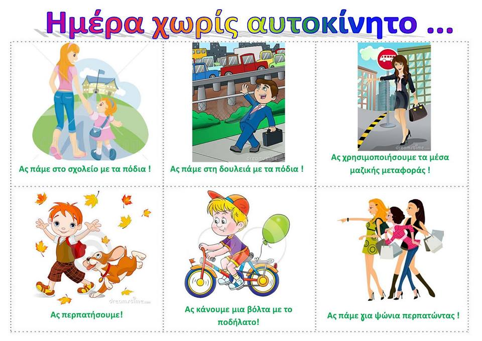
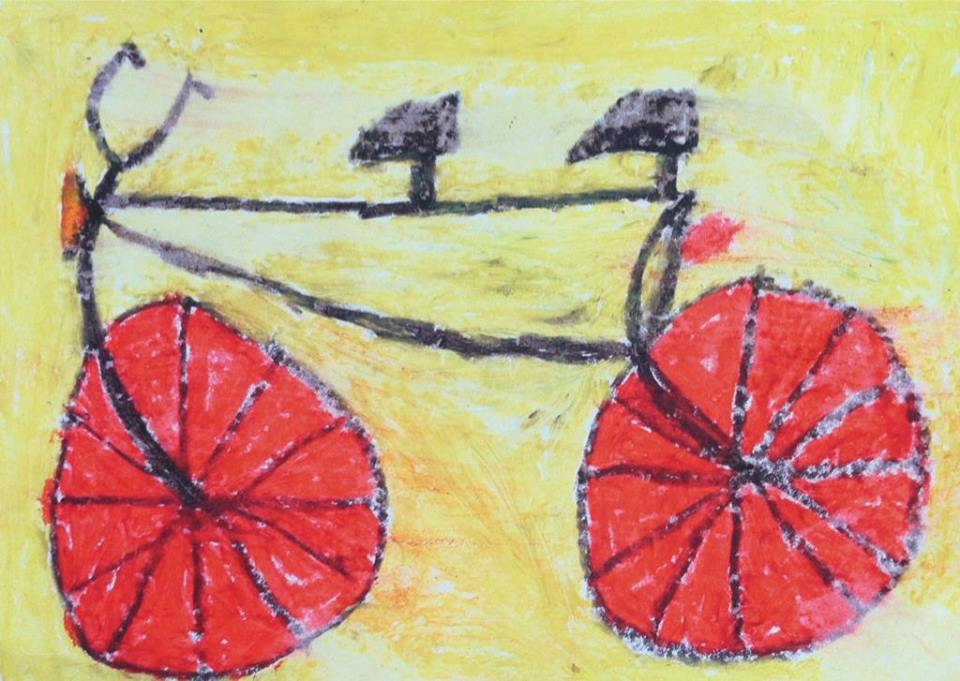

Η Σάμος έχει επιλεγεί την φετινή χρονιά ως το επίκεντρο των δράσεων και εκδηλώσεων ευαισθητοποίησης κοινού και φορέων για τα οφέλη της βιώσιμης κινητικότητας κατά την διάρκεια της Ευρωπαϊκής Εβδομάδας Κινητικότητας από 16 έως 22 Σεπτεμβρίου. Στο πλαίσιο αυτό το ΥΠΕΝ διοργανώνει σειρά δράσεων ενημέρωσης που θα κορυφωθούν με την επίσκεψη στο νησί του Αν. Υπουργού Περιβάλλοντος και Ενέργειας, το διήμερο 21-22/9.
Έξυπνη κινητικότητα. Ισχυρή οικονομία. #mobilityweek
Το φετινό θέμα της Ευρωπαϊκής Εβδομάδας Κινητικότητας εστιάζει στα ωφέλη που προκύπτουν από την έξυπνη αστική κινητικότητα, τόσο στον κάθε πολίτη μεμονωμένα, όσο και στις επιχειρήσεις αλλά και στην κοινωνία γενικότερα. Δίνει έμφαση στην αλλαγή των τρόπων συμπεριφοράς μας επιλέγοντας περισσότερο βιώσιμους τρόπους μετακίνησης, όπως το ποδήλατο, το βάδισμα, τα μέσα μεταφοράς καθώς και ο συνδυασμός αυτών σε κάθε διαδρομή. Αυτό θα βοηθήσει τις πόλεις μας να ανπτυχθούν οικονομικά και να γίνουν περισσότερο καθαρές, ήσυχες, ασφαλέστερες, λιγότερο συνωστισμένες και σίγουρα ένα καλύτερο μέρος για να μένουμε.
Ας σκεφτούμε καλύτερα όλα τα διαθέσιμα μέσα που έχουμε για τη μετακίνησή μας και ας επιλέξουμε σωστά την καλύτερη και πιο σύντομη διαδρομή. Κάνοντας έξυπνες επιλογές στα είδη των μέσων μεταφοράς που χρησιμοποιούμε, εξοικονομούμε χρήματα, βελτιώνουμε την υγεία μας και βοηθάμε το περιβάλλον.
Ιδιαίτερα σημαντικός είναι ο ρόλος των τοπικών αρχών ως προς την αλλαγή των συμπεριφορών και συνηθειών μετακίνησης των δημοτών με ανάπτυξη βιώσιμων τοπικών σχεδίων κινητικότητας.
Στόχος είναι η ανάδειξη του αστικού περιβάλλοντος εξασφαλίζοντας άριστη κυκλοφοριακή ΣΥΝΔΕΣΗ με ταυτόχρονη εξοικονόμηση ενέργειας, χρήση καθαρότερης ενέργειας, ορθολογική διαχείριση του υπάρχοντος μεταφορικού δικτύου, εναλλακτικούς τρόπους μετακίνησης – τόνωση της ζωτικότητας των πόλεων, ενίσχυση των κοινωνικών συναλλαγών και δημιουργία ποιοτικής «ατμόσφαιρας» στις πόλεις με λιγότερη ατμοσφαιρική και ακουστική ρύπανση.
Χάρη στην μεγάλη συμμετοχή ομάδων, συλλόγων, οργανώσεων και εθελοντών από τις 16 έως τις 22 Σεπτεμβρίου, δεκάδες εκδηλώσεις, για μικρούς και μεγάλους θα λάβουν χώρα στην πόλη της Σάμου, το Καρλόβασι, το Πυθαγόρειο και τον Μαραθόκαμπο. Ελάτε να γιορτάσουμε παίζοντας, μαθαίνοντας, ενημερώνοντας, ευαισθητοποιώντας τους εαυτούς μας και τους άλλους!!!
Για όλη τη διάρκεια της Ευρωπαϊκής Εβδομάδας Κινητικότητας από 16 έως 22 Σεπτεμβρίου το ΚΤΕΟ Σάμου ΕΠΕ θα προσφέρει έκπτωση 50% για την έκδοση κάρτας καυσαερίων.
Για όλη τη διάρκεια της Ευρωπαϊκής Εβδομάδας Κινητικότητας από 16 έως 22 Σεπτεμβρίου το ΚΤΕΛ Σάμου ΑΕ θα προσφέρει έκπτωση 50% στο εισητήριο του δρομολογίου των 9:45 Σάμος-Μυτιληνιοί-Πυθαγόρειο-Σάμος.
ΠΑΡΑΣΚΕΥΗ 16 ΣΕΠΤΕΜΒΡΊΟΥ
(Ώρα έναρξης 18.00 στην παραλιακή της πόλεως Σάμου)
Αθλήματα δρόμου:
Επίδειξη αθλητών με τη συμβολή προπονητών της ομάδας Στίβου της «Αναγέννησης» στην παραλιακή οδό της πόλης
• Προκαταρκτικές ασκήσεις για προετοιμασία αερόβιας ικανότητας (πεζοπορία, ελεύθερο τρέξιμο).
• Επίδειξη προγράμματος Kids Athletic (Aσκήσεις διάγνωσης αθλητικών ικανοτήτων – εύρεση ταλέντων).
• Πινγκ – Πονγκ!
• Μίνι τουρνουά βόλεϊ στην παραλιακή της πόλης
• Αγώνες δρόμου για μικρούς! Τμήμα Α΄Β΄Γ΄ Δημοτικού (600 μέτρα) / Τμήμα Δ΄Ε΄ΣΤ΄ Δημοτικού (1.000 μέτρα)
ΣΑΒΒΑΤΟ 17 ΣΕΠΤΕΜΒΡΊΟΥ
(Ώρα έναρξης 18.00 στην παραλιακή της πόλεως Σάμου)
• Σκακιστικός Όμιλος Σάμου «Ο Μέλισσος»:
Παιχνίδι κρυμμένου θησαυρού με θέμα την «Κινητικότητα».
• «Ζωντανό σκάκι». Γινόμαστε «πιόνια» και παίζουμε!
• Σκάκι για μικρούς με μεγάλα πιόνια!
• Η Σκακιστική ´Tέχνη¨….συναντά την Τέχνη του Πηλού.
• Η αγγειοπλαστική στη Σάμο από την αρχαιότητα έως σήμερα.
Ο Τίμος Χατζηλαγός παρουσιάζει τη «Σαμία Γη».
• Κατασκευή πήλινων εξαρτημάτων ποδηλάτου. Εργαστήριο για μικρούς και μεγάλους!
• «Πιάνο στο δρόμο»: Παρουσίαση μουσικού προγράμματος από τις πιανίστες της ομάδας «σαμΑrt» Νάντια Μπαντούρα και Γεωργία Σεργίου.
• Πικ – Νικ στο δρόμο: Ακούμε μουσική και απολαμβάνουνε το κολατσιό μας!
ΚΥΡΙΑΚΗ 18 ΣΕΠΤΕΜΒΡΙΟΥ
(Ώρα έναρξης 10.00 στην παραλιακή της πόλεως Σάμου)
• 10.00: Σύλλογος Αυτοδυτών Σάμου: Καθαρισμός βυθού και παραλίας (περιοχή Σιδερά) από πλαστικά απορρίμματα στα πλαίσια της εκστρατείας ενημέρωσης για την κατάργηση της πλαστικής σακούλας στη Σάμο. Ώρα εκκίνησης: 10 π.μ. στην παραλία Σιδερά.
• 11.00:Πολιτιστικός Σύλλογος Βαθέος Σάμου «Καπετάν Λαχανάς»:
«Στράτα στου χωριού τα σοκάκια». Περιήγηση στον τόπο και στο χρόνο. Μέλη του Συλλόγου μας «ξεναγούν» στις όμορφες και ιστορικές γειτονιές του Άνω Βαθέος, ταξιδεύοντάς μας στο παρελθόν! Σημείο εκκίνησης: Κτίριο Κοινότητας Άνω Βαθέος. Ώρα εκκίνησης: 11.00.
• 12.00: Κυκλοφοριακό Πάρκο στον Δημοτικό Κήπο. Φέρτε τα πατίνια, τα ποδήλατα, τα.. πόδια σας και ελάτε να μάθουμε βασικούς κανόνες κυκλοφοριακής ασφάλειας στους δρόμους! (ΣΕΟ Τ.Τ. Σάμου, Δ/νση Α/θμιας Εκπαίδευσης Σάμου, εθελοντές)
• 13.00 (Γεφυράκι): Ελάτε μαζί μας να κάνουμε ένα πείραμα:
Πόσα αυτοκίνητα, πεζοί, ποδηλάτες και μαμάδες με καρότσια χρειάζονται για να καλύψουν το χώρο που καταλαμβάνει ένα λεωφορείο; Πόσοι πεζοί για τον χώρο ενός αυτοκινήτου. Πόσο χώρο.. πεζών καταλαμβάνει ένα ποδήλατο.. Αυτά και πολλά άλλα θα δοκιμάσουμε στο πάρκινγκ απέναντι από τον σταθμό ΚΤΕΛ στο Γεφυράκι!
• 17.30 Ζωγραφίζουμε τον Μετεωρολογικό Σταθμό στην παραλιακή! Ελάτε να ζωγραφίζουμε και να ομορφύνουμε μια γωνία της πόλης μας (ΣΕΟ Τ.Τ. Σάμου σε συνεργασία με το Λιμενικό Ταμείο Σάμου και εθελοντές)
• 19.00: Επίδειξη και γευστική δοκιμή των σαμιώτικων κρασιών από την ΕΟΣΣ στο Μουσείο Οίνου.
• 19.00:Κατασκευή ποδηλάτου από άχρηστα εξαρτήματα: Εργαστήριο με τον Τίμο Χατζηλαγό
ΔΕΥΤΕΡΑ 19 ΣΕΠΤΕΜΒΡΙΟΥ
(Ώρα έναρξης 18.30 στην παραλιακή της πόλεως Σάμου)
• 18.30: SAMOS WIND SURFING CENTER
• 18.30: Υπαίθρια επίδειξη Kick Boxing. Αθλητικός Σύλλογος «Άλκιμος Σάμου»
• 18.30: Υπαίθρια επίδειξη TAE KWO DO από τον Σύλλογο «Άγιος Ευφραίμ Μυτιληνιών»
• 18.30: «Αναγέννηση, ομάδα Μπάσκετ»: αθλητική επίδειξη
• 18.30: Υπαίθρια μαθήματα ζωγραφικής από την Ευδοκία Μαθιού. Ζωγραφική σε πέτρα, ζωγραφική σε ταμπλό, face painting και άλλα πολλά!
• Κατασκευή παζλ στην παραλιακή
• Επίδειξη από Ελληνική Ομάδα Διάσωσης- Παράρτημα Σάμου
• Συμπλήρωση ερωτηματολογίου για το ποδήλατο: Εμείς ρωτάμε, εσείς απαντάτε! (ΣΕΟ Τ.Τ. Σάμου)
ΤΡΙΤΗ 20 ΣΕΠΤΕΜΒΡΙΟΥ
(Ώρα έναρξης 18.00 στην παραλιακή της πόλεως Σάμου)
• 18.00: Εκθετήριο ΕΕΕΕΚ
• 18.30: Μεταμορφώνοντας τα σκουπίδια: Εργαστήρι, «Μεταμορφώνοντας ένα παγκάκι»
• 18.30: «Αναγέννηση, ομάδα Μπάσκετ»: αθλητική επίδειξη
• 19.00: «Ζωγραφίζουμε για τους ήρωες του νησιού». Σύλλογος Γονέων, Κηδεμόνων και Φίλων ατόμων με αναπτυξιακή υστέρηση Π.Ε. Σάμου «Η Μέλισσα».
ΤΕΤΑΡΤΗ 21 ΣΕΠΤΕΜΒΡΙΟΥ
• 18.00: Ποδηλατικός Αγώνας Χρονομέτρησης από 12 ετών και άνω, ανδρών και γυναικών. Εκκίνηση: Πλατεία Σοφούλη.
Διαδρομή: Πλατεία –Λιμεναρχείο-Κόμβος Μαλαγαρίου- Άνω Κόμβος Μαλαγαρίου-αναστροφή και επιστροφή από τον παραλιακό με τερματισμό στην Πλατεία!
(Ποδήλατα πόλης και ποδήλατα βουνού)
• 18.00: Μικροί Τροχονόμοι κόβουν «προειδοποιητικές κλήσεις» (ΣΕΟ- Τ.Τ. Σάμου)
• 18.30:Μαθαίνοντας για την τυφλότητα.
«Μπαίνω στη θέση σου και σε καταλαβαίνω περισσότερο». Στην γραμμή για τους τυφλούς στην παραλιακή.
• Vespa Club: Επίδειξη ασφαλούς οδήγησης και έκθεση Vespa
• 18.30 : Μουσική στην πλατεία του Δημαρχιακού μεγάρου από την ορχήστρα του Μανώλη Σάββα
• 19.00 «ΚΙΝΟΥΜΑΙ» Ημερίδα στην αίθουσα εκδηλώσεων του Δημαρχιακού Μεγάρου σε συνεργασία με το Υπουργείο παρουσία του Αναπληρωτή Υπουργού Περιβάλλοντος κ. Τσιρώνη.
Βράβευση των επικεφαλής των ομάδων εθελοντών που συμμετείχαν στις Εβδομάδες Ευρωπαϊκής κινητικότητας 2015/2016
• Εγκαίνια των δύο νέων σταθμών ποδηλάτων από τον Αναπληρωτή Υπουργό Περιβάλλοντος κ. Ιωάννη Τσιρώνη -Δήμαρχο Σάμου κ. Μιχάλη Αγγελόπουλο
• Η δημοτική συγκοινωνία σε έκτακτα δρομολόγια σας ξεναγεί στην πόλη:
Δρομολόγια στις 18.00 -21.00. Αφετηρία: Πλατεία Σοφούλη
ΠΕΜΠΤΗ 22 ΣΕΠΤΕΜΒΡΙΟΥ – Δίνουμε «ρεπό» στο αυτοκίνητο!
(Ώρα έναρξης 18.00 στην παραλιακή της πόλεως Σάμου)
• Δωρεάν σέρβις παιδικών ποδηλάτων από τον Τάκη Μανωλιάδη
• 18.00 «Ποδηλατώ..με γονική συναίνεση».
Ποδηλατοβόλτα για μικρούς στην παραλιακή της πόλης. Τερματισμός και κλήρωση ποδηλάτων και άλλων δώρων. Διανομή φυτών από Γιακουμή Αμυρσώνη στους μικρούς συμμετέχοντες.
• Βράβευση μαθητών Ειδικού Σχολείου
• Βράβευση αθλητών στίβου της «Αναγέννησης
• Η Νεανική Χορωδία «σαμΑrt» τραγουδά για το ποδήλατο.
• 19.00: «Πάμε σαν άλλοτε»: Ο εμπορικός δρόμος της πόλης ταξιδεύει στο παρελθόν.
• Ο Εμπορικός Σύλλογος Σάμου εγκαινιάζει εκστρατεία ενημέρωσης για την κατάργηση της πλαστικής σακούλας.
• 19.00 Παιχνίδια μιας άλλης εποχής. Αφετηρία στον Δημοτικό Κήπο: Τσουβαλοδρομίες, σχοινάκι, κεραμιδάκια, διελκυστίνδα κ.ά.
• 19.30 Πολιτιστικός Σύλλογος Βαθέος Σάμου «Καπετάν Λαχανάς»: Παρουσίαση παραδοσιακών χορών στην πλατεία Πυθαγόρα.
• Έκθεση ποδηλατικού εξοπλισμού στην παραλιακή της πόλης.
• Nαυτικός Όμιλος Σάμου
• Μαθήματα ασφαλούς οδήγησης από Σχολές Οδηγών
• Η δημοτική συγκοινωνία σε έκτακτα δρομολόγια σας ξεναγεί στην πόλη:
Δρομολόγια στις 18.00 -21.00. Αφετηρία: Πλατεία Σοφούλη
| ΔΡΟΜΟΛΟΓΙΑ ΑΠΟ ΣΑΜΟ (ΒΑΘΥ) ΓΙΑ |
ΔΕΥΤΕΡΑ ΕΩΣ ΠΑΡΑΣΕΥΗ |
ΣΑΒΒΑΤΟ |
|---|---|---|
| ΚΟΚΚΑΡΙ - ΛΕΜΟΝΑΚΙΑ - ΤΣΑΜΑΔΟΥ - ΑΥΛΑΚΙΑ - ΤΣΑΜΠΟΥ - ΑΓ. ΚΩΝ/ΝΟΣ - ΚΑΡΛΟΒΑΣΙ |
08:30 - 11:00 - 12:20 - 14:00 - 17:00 | 08:30 - 14:00 - 17:00 |
| ΠΥΘΑΓΟΡΕΙΟ ΑΠΕΥΘΕΙΑΣ | 06:15-09:00-09:30 - 11:00-12:45-14:00-17:00 | 11:00 - 14:00 - 16:00 |
| ΠΥΘΑΓΟΡΕΙΟ (ΜΕΣΩ ΜΥΤΙΛΗΝΙΩΝ) | 09:45 | - |
| ΜΥΤΙΛΗΝΙΟΙ | 09:45 - (08:00 - 11:00 - 12:45 - 17:00 ΜΕΣΩ ΠΥΘΑΓΟΡΕΙΟΥ) | 11:00 - 14:00 ΜΕΣΩ ΠΥΘΑΓΟΡΕΙΟΥ |
| ΠΟΤΟΚΑΚΙ | 09:45 - 14:00 | - |
| ΧΩΡΑ | 09:00 - 09:45 - 11:00 - 12:45 - 14:00 - 17:00 | 11:00 - 14:00 |
| ΗΡΑΙΟΝ | 06:15 - 09:30 - 14:00 | - |
| ΠΑΓΩΝΔΑ | 06:15 - 14:00 ΔΕΥΤΕΡΑ | - |
| ΜΥΛΟΙ | 06:15 - 14:00 ΚΑΘΕ ΔΕΥΤΕΡΑ | - |
| ΚΟΥΜΑΡΑΔΑΙΟΙ - ΠΥΡΓΟΣ | 14:00 | - |
| ΠΥΡΓΟΣ - ΚΑΡΛΟΒΑΣΙ | 08:00 ΚΑΘΕ ΔΕΥΤΕΡΑ | - |
| ΒΟΥΡΛΙΩΤΕΣ | 14:00 ΔΕΥΤΕΡΑ | - |
| ΚΑΛΛΙΘΕΑ-ΔΡΑΚΑΙΟΙ | 12:20 ΚΑΘΕ ΔΕΥΤΕΡΑ | - |
| ΒΟΤΣΑΛΑΚΙΑ | 12:20 | - |
| ΑΕΡΟΔΡΟΜΙΟ | 06:15 - 08:00 - 11:00 - 12:45 - 14:00 - 17:00 | 11:00 - 14:00 - 16:00 |
| ΔΡΟΜΟΛΟΓΙΑ ΓΙΑ ΣΑΜΟ (ΒΑΘΥ) ΑΠΟ |
ΔΕΥΤΕΡΑ ΕΩΣ ΠΑΡΑΣΕΥΗ |
ΣΑΒΒΑΤΟ |
|---|---|---|
| ΚΑΡΛΟΒΑΣΙ - ΑΓ. ΚΩΝ/ΝΟΣ - ΤΣΑΜΠΟΥ - ΑΥΛΑΚΙΑ | 07:00 - 08:15 - 09:30 - 12:30 - 15:00 - 17:00 | 09:30 - 12:30 - 15:00 |
| ΤΣΑΜΑΔΟΥ - ΛΕΜΟΝΑΚΙΑ - ΚΟΚΚΑΡΙ | 07:30 - 08:45 - 10:05 - 13:00 - 15:30 - 17:30 | 10:00 - 13:00 - 15:30 |
| ΠΥΘΑΓΟΡΕΙΟ - ΧΩΡΑ - ΜΥΤΙΛΗΝΙΟΙ - ΣΑΜΟΣ | 08:20 - 11:20 - 13:00 - 17:20 | 11:20 - 14:20 |
| ΠΥΘΑΓΟΡΕΙΟ - ΣΑΜΟΣ | 07:20 - 08:05 - 10:15 - 15:15 | 16:20 |
| ΜΥΤΙΛΗΝΙΟΙ | 08:30 - 10:00 - 11:30 - 13:15 - 17:30 | 11:35 - 14:35 |
| ΠΟΤΟΚΑΚΙ | 10:10 - 15:15 | - |
| ΧΩΡΑ | 07:50 - 08:25 - 10:10 - 11:25 - 13:10 - 17:25 | 11:30 - 14:30 |
| ΗΡΑΙΟΝ | 07:10 - 15:00 | - |
| ΠΑΓΩΝΔΑ | 07:00 - 14:50 ΔΕΥΤΕΡΑ | - |
| ΜΥΛΟΙ | 06:45 - 14:40 ΔΕΥΤΕΡΑ | - |
| ΠΥΡΓΟΣ - ΚΟΥΜΑΡΑΔΑΙΟΙ | 07:30 | - |
| ΠΥΡΓΟΣ - ΚΑΡΛΟΒΑΣΙ | 12:15 ΚΑΘΕ ΔΕΥΤΕΡΑ | - |
| ΒΟΥΡΛΙΩΤΕΣ | 07:00 - 10:00 ΚΑΘΕ ΔΕΥΤΕΡΑ | - |
| ΔΡΑΚΑΙΟΙ - ΚΑΛΛΙΘΕΑ | 06:10 - 14:45 ΚΑΘΕ ΔΕΥΤΕΡΑ | - |
| ΒΟΤΣΑΛΑΚΙΑ - ΚΑΡΛΟΒΑΣΙ | 15:45 | - |
| ΑΕΡΟΔΡΟΜΙΟ - ΧΩΡΑ - ΜΥΤΙΛΗΝΙΟΙ - ΣΑΜΟΣ | 08:25 - 11:25 - 13:10 - 17:25 | 11:25 - 14:30 |
| ΑΕΡΟΔΡΟΜΙΟ - ΠΥΘΑΓΟΡΕΙΟ - ΣΑΜΟΣ | 07:20 - 15:05 | 16:30 |
| ΔΕΥΤΕΡΑ | ΤΡΙΤΗ | ΤΕΤΑΡΤΗ | ΠΕΜΠΤΗ | ΠΑΡΑΣΚΕΥΗ | ΣΑΒΒΑΤΟ | ΚΥΡΙΑΚΗ | |
|---|---|---|---|---|---|---|---|
| PIRAEUS |
- | - | 11:00 (EM) | 20:00 (EM) | - | - | 11:45 (EM) |
| TURKEY (KUSADASI - EPHESUS) |
17:00 (ΕΠ) | 17:00 (ΕΠ) | - | 17:00 (ΕΠ) | - | 17:00 (ΕΠ) | 17:00 (ΕΠ) |
| AGIOS KIRIKOS IKARIA |
- | - | 11:00 (ΕΜ) | 20:00 (ΕΜ) | - | - | 11:45 (ΕΜ) |
| FOURNI |
- | - | - | 20:00 (ΕΜ) | - | - | - |
| KAVALA |
- | 03:00, 17:45 (EM) | - | - | - | 03:00 (EM) | - |
| PATMOS |
- | - | 11:00 (EM) | 20:00 (EM) | - | - | 11:45 (EM) |
| PAROS / NAXOS |
- | - | - | - | - | - | 11:45 (EM) |
| CHIOS / LESVOS / LIMNOS |
- | 03:00, 17:45 (EM) | - | - | - | 03:00 (EM) | - |